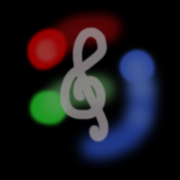

AJ or Antonio Pisani is a Music Technology major with a background in instrumental and vocal performance, recording, and composition. His work prior to and throughout college has focused on music composition, recording, editing, and sound design. During his time at Temple University, a course in computer applications for music majors introduced him to programming through the use of the Web Audio API, specifically for JavaScript. Since then, he has developed an interest in coding and experience with JavaScript, HTML, C#, WEBGL, Lua, and Python, and has worked with APIs and libraries such as Unity, LÖVE2D, and p5.js. His projects include web-based or standalone applications, game modifications, and music composition projects that reflect his musical background, his interest in programming, or both.
A MIDI effect used for MIDI controllers within Digital Audio Workstations. Any note played under middle C is played in a pattern where the user can select a major or minor chord shape. anything above middle C will remain untouched. This lets the user play an easier bass line letting the code play the hard pattern.
A MIDI effect used for MIDI controllers with external audio sources (DAWs or onboard sound). The website creates firework style visuals based off of MIDI inputs. There is no sound generated within the website so external audio equipment (like a DAW or if the controller is also a digital piano) is recommended but not required as neither is a MIDI controller itself as the website has limtied QWERTY Keyboard support.
A simple website used to show what a basic Atari Punk Console Synth sounds like before one decides to build it themselves.

“SparkStage” is a software application that generates real-time visual effects primarily from MIDI input. The software translates the data and either creates particle emitters or controls pre-placed stage-style lights. This allows the user to create visuals through a MIDI controller. The software was designed in Unity to prioritize accessibility, as it is available for both macOS and Windows and includes performance settings. It also includes built-in piano sounds so it can be used without additional software, though it integrates easily with digital audio workstations for expanded functionality. The software can support up to 6 MIDI devices connected at once, enabling collaborative performances. Randomized elements in the visual generation ensure that each performance produces a unique set of visuals, even if the same settings are used. Overall, the software is intended to provide an intuitive, flexible tool for musicians to explore the intersection of sound and visual effects, from simple solo performances to small-band setups.
A simple paint clone using p5.js. The goal was to create something used for easy creation of PNG images.
A simple train game inspired by Google's Crocidile Game Using p5.js
Lazer effects available at the click of the mouse using p5.js
A virtual fire simulation using p5.js
Virtual bouncy balls available at the click of the mouse, demonstrating physics principles using p5.js
A simple idea for a virtual water fountain design demonstated using p5.js
A simple virtual pet fish using p5.js. Made to test noise in p5. Similarly to a real fish, you can really only look at it.